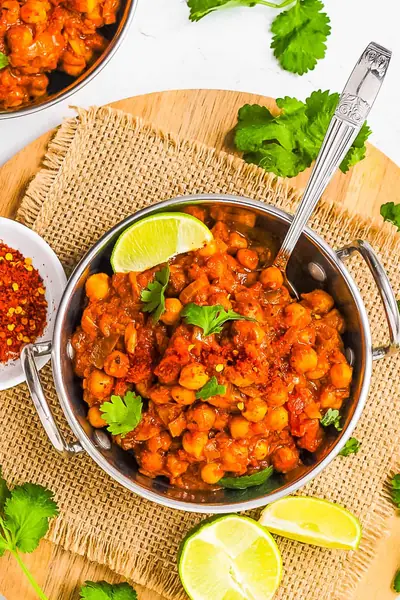

Chana Masala

Ingredients
- 1 tbsp extra virgin olive oil
- 2 medium red onions (diced)
- 5 cloves garlic (minced)
- 1 tsp grated fresh ginger
- 1 tsp cumin seeds
- 2 tsp ground coriander
- 2 tsp ground cumin
- ⅛ tsp cayenne pepper
- 1 tsp ground turmeric
- 1 tsp smoked paprika
- 1 tsp paprika
- 1 tsp garam masala
- 15 oz can of whole tomatoes with their juices (chopped small)
- ⅔ cup water
- 45 oz canned chickpeas (3) 15 ounce cans)
- ½ tsp salt
Steps
- Heat oil in a large pot on high heat.
- Add cumin seeds and as soon as they start popping, add onion, garlic and ginger and sauté over medium-low heat until caramelized, about 5 minutes.
- Add the coriander, cumin powder, cayenne, turmeric, paprika/smoked paprika, and garam masala. Cook for another 30 seconds, then add the tomatoes + juices, scraping up any bits that have stuck to the pan.
- Add the water, chickpeas and salt.
- Bring to a boil, then reduce to simmer and cover. Cook on low for 30 minutes, stirring every 5 minutes or so to make sure the Chana Masala doesn't stick to the bottom of the pot.
Recipe by Anjali Shah · The Picky Eater, from The Picky Eater. Saved here for personal use; the original has the full notes, tips and photos. Open original